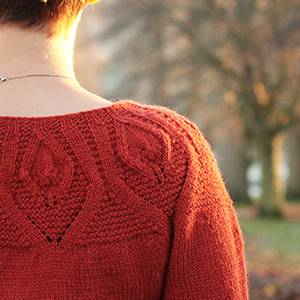

We hope this collection inspires you, as you cast on some delicious knits, and at the same time support a great cause.
Knit with us! We are hosting a knitalong to bring knitters together around this project, starting now and running until Tuesday April 18th. Learn more about the fabulous prizes, and how to participate on the blog.
Wanna see what others are knitting and saying about the project? Find #heartonmysleeve knits on Instagram, Facebook and Twitter, or visit our Ravelry Group to share your projects.
If you have inquiries about techniques and methods used in the ebook, please review our help page first.
If this hasn't answered your question, send us an email at heartonmysleeveknits@gmail.com.
Heart On My Sleeve Knits was conceived and coordinated by Alexa Ludeman and Emily Wessel of Tin Can Knits. We aimed to put together this ebook with respect and care, and we hope that you enjoy it.